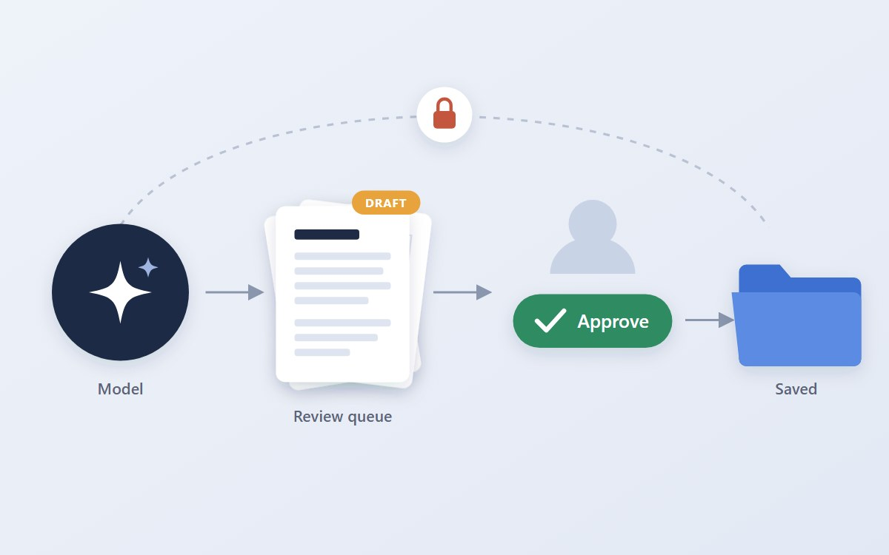
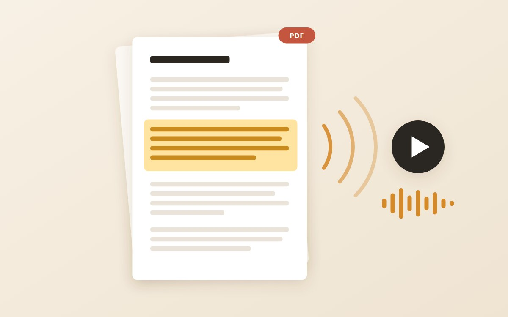
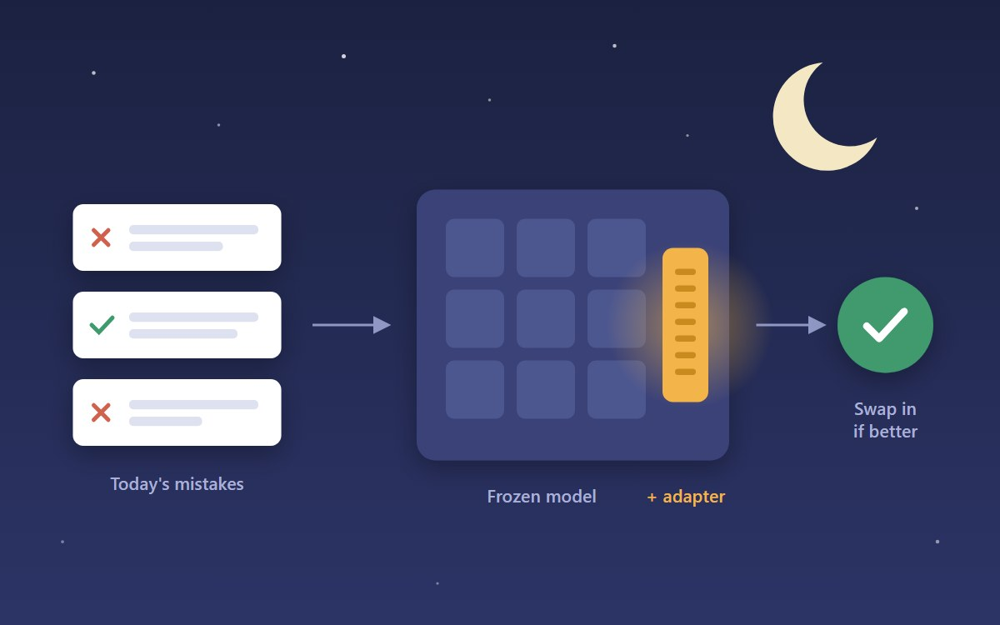
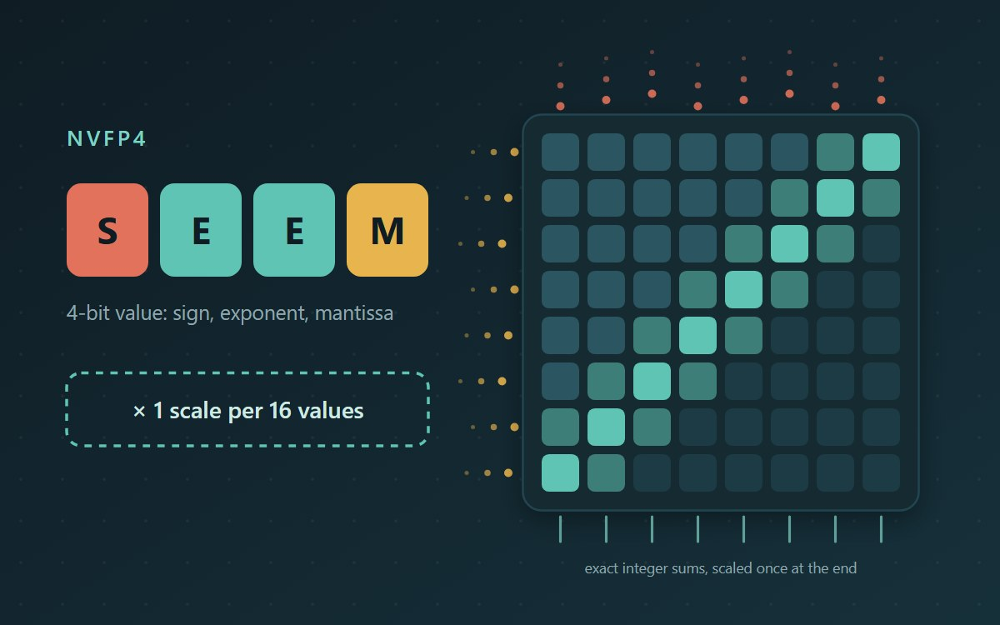
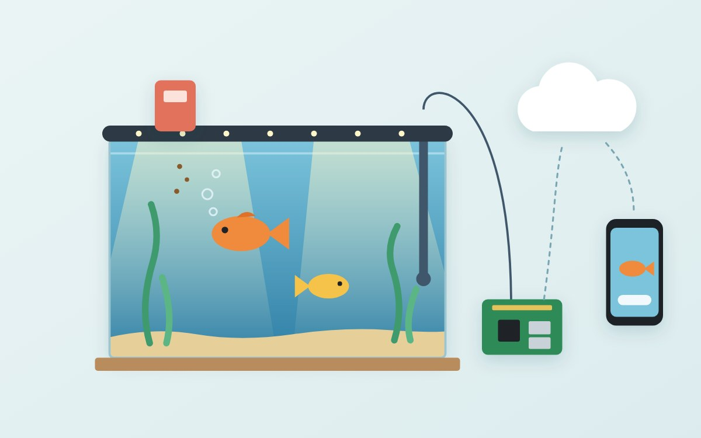
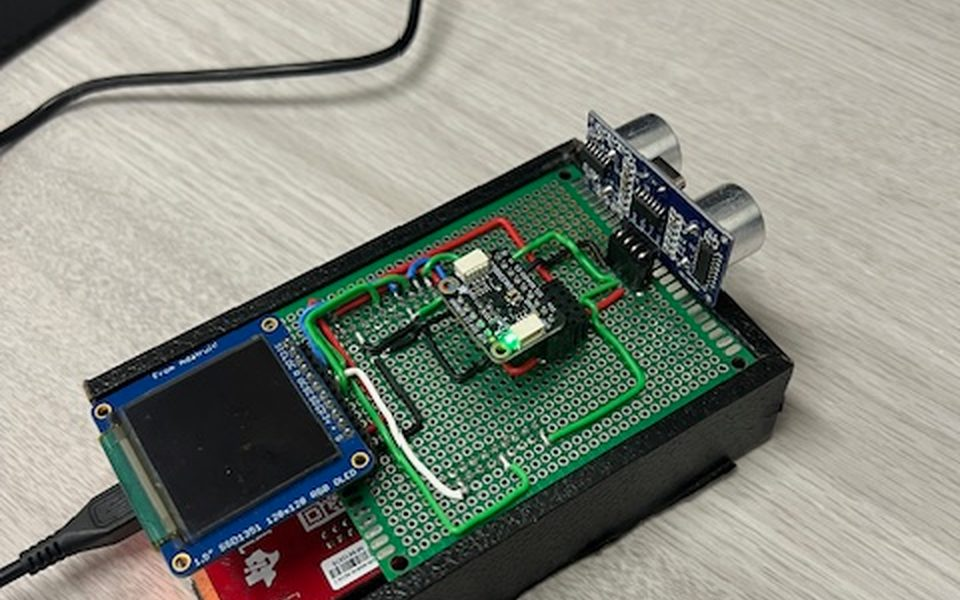

This is a website where I post some of the stuff I build, for school, for work, and for fun.

An LLM that reads financial and legal documents and drafts what comes out of them, with 22 tools from capital calls to deposition digests. It can't open a file without asking or save anything until a person approves. Every tool was tested end to end against the live model.

Drop in a PDF, Word doc, Markdown or text file and it reads it out loud, highlighting each paragraph as it goes. The text-to-speech model runs entirely in your browser (no server, no API key), and you can save the whole thing as an audio file.

A concept (and rough prototype) for an assistant that retrains a small LoRA adapter overnight based on the day's mistakes. Still a work in progress.

Adding NVIDIA's 4-bit number format to an open-source matrix accelerator. NVFP4 matmuls now run bit-exact in hardware and in the Spike model; larger matmuls are next.

Our senior design project, a smart aquarium on a Raspberry Pi and AWS IoT.

A short writeup and demo of my embedded systems final project.